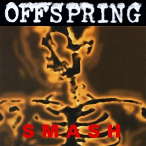

Smash
Publicado por Arthur Baldner em

Smash foi lançado em 8 de abril de 1994 pela gravadora independente Epitaph Records, e é o álbum mais vendido de todos os tempos por uma gravadora independente.
Lista de músicas:
- Time to Relax -
Letras
- Nitro (Youth Energy) -
Letras
- Bad Habit -
Letras
- Gotta Get Away -
Letras
- Genocide -
Letras
- Something to Believe in -
Letras
- Come Out and Play (Keep 'Em Separated) -
Letras
- Self Esteem -
Letras
- It'll Be a Long Time -
Letras
- Killboy Powerhead -
Letras
- What Happened To You -
Letras
- So Alone -
Letras
- Not The One -
Letras
- Smash -
Letras